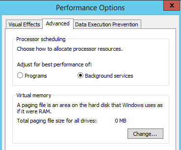
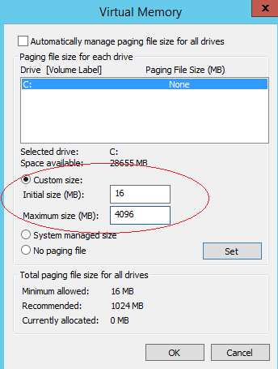

Enabling ECS virtual memory will deteriorate disk I/O performance. If the memory is insufficient, you are advised to expand the memory by Modifying ECS vCPU and Memory Specifications. If you really need to enable virtual memory, see the operations described below.

If the memory usage is excessively high and the I/O performance is not as good as expected, you are not suggested to enable virtual memory. The reason is as follows: The excessively high memory usage limits the system performance improvement. Furthermore, frequent memory switching requires massive additional I/O operations, which will further deteriorate the I/O performance and the overall system performance.
The operations described in this section are provided for the ECSs running Windows Server 2008 or later.
- Right-click Computer and choose Properties from the shortcut menu.
- In the navigation pane on the left, choose Advanced system settings.
The System Properties dialog box is displayed.
- Click the Advanced tab and then Settings in the Performance pane.
The Performance Options dialog box is displayed.
Figure 1 Performance Options
 - Click the Advanced tab and then Background Services in the Processor scheduling pane.
- Click Change in the Virtual memory pane.
The Virtual Memory dialog box is displayed.
- Configure virtual memory based on service requirements.
- Automatically manage paging file size for all drives: Deselect the check box.
- Drive: Select the drive where the virtual memory file is stored.
You are advised not to select the system disk to store the virtual memory.
- Custom size: Select Custom size and set Initial size and Maximum size.
Considering Memory.dmp caused by blue screen of death (BSOD), you are advised to set Initial size to 16 and Maximum size to 4096.
Figure 2 Virtual Memory
 - Click Set and then OK to complete the configuration.
- Restart the ECS for the configuration to take effect.